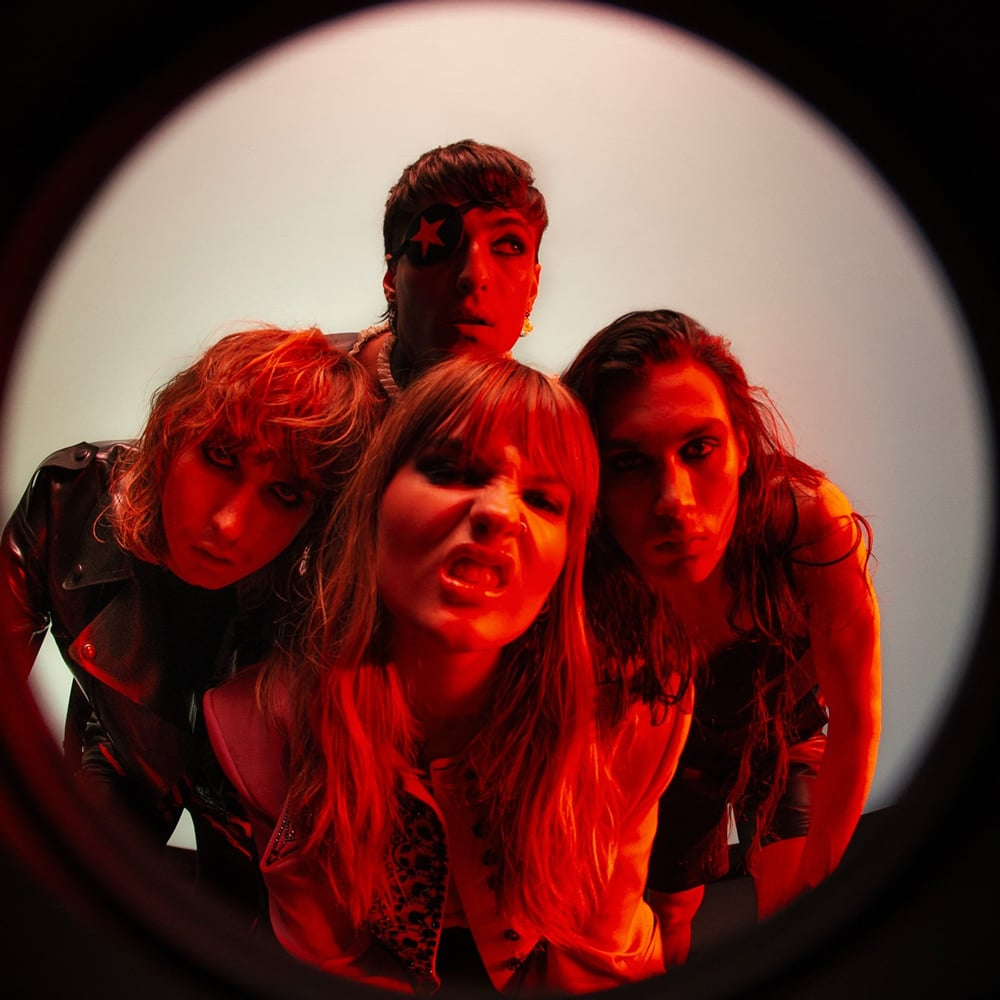

Måneskin
- Італійський рок-гурт, що переміг на Євробаченні 2021
- Яскравий стиль, драйвова музика та всесвітнє визнання
- Енергійні живі виступи та сучасне звучання рок-музики
- Ексклюзивний мерч та альбоми доступні для замовлення

Måneskin — це італійський рок-гурт, створений у Римі у 2016 році. До складу входять вокалист Даміано Давід, басистка Вікторія Де Анджеліс, гітарист Томас Раджи та барабанщик Ітан Торкйо. Вони здобули світову славу після перемоги на пісенному конкурсі «Євробачення-2021» з піснею «Zitti e buoni».
Їхня творчість поєднує елементи глем-року, хард-року та поп-року. Гурт відомий своїми епатажними сценічними образами, зухвалим стилем та потужною енергетикою на живих концертах по всьому світу.

Унікальний глем-рок стиль, що поєднує класичний рок із сучасними трендами та яскравими сценічними образами.
Перемога на Євробаченні 2021 принесла гурту миттєве світове визнання та мільйони нових шанувальників.
Потужні живі виступи з неймовірною енергетикою, які збирають повні стадіони по всьому світу.
Харизматичний вокаліст Даміано Давід та талановиті музиканти, які створюють неповторну хімію на сцені.
Активна творча діяльність: нові альбоми, сингли та колаборації з відомими артистами.
Сильний вплив на молодь та популяризація рок-музики серед нової генерації слухачів.